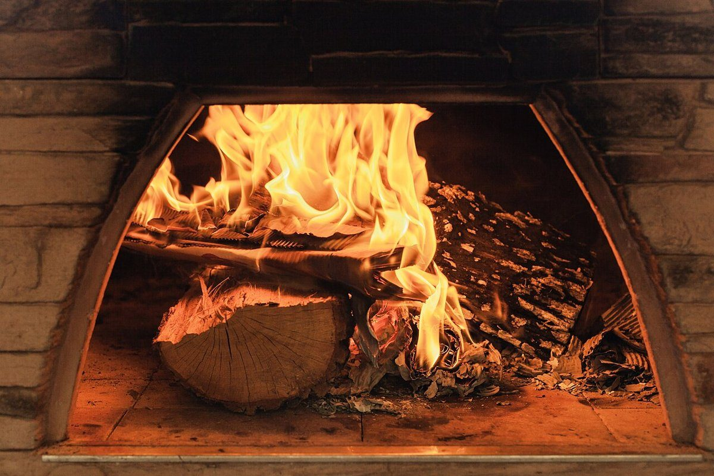

店のこと
店のこと
お店について確認できているのは、所在地とInstagramのアカウントだけです。
このページの「想像してみる」部分は、制作側が想像して書いたものです。お店の実際の様子・考え・商品とは関係がありません。
確認できていること
- 店名は「パン工房 YU-JIN」、業種はパン屋(ベーカリー)
- 所在地は大分県佐伯市春日町2-19(〒876-0806)
- 電話番号はなし。連絡はInstagramから
- 営業時間・定休日・メニュー・価格・ご予約・駐車場は準備中

想像してみる
「-」で結ばれた二つの語から
屋号の意味は分かりません。制作側は、二つの言葉をハイフンでつないだ形から、「ひとつに決めず、いろいろなものが並ぶ棚」のようなものを想像しました。あくまで見た目からの連想で、実際のお店の姿ではありません。



パンの写真について
イメージ写真の見方
このサイトのパンや材料の写真は、すべて雰囲気をお伝えするためのフリー素材です。お店で扱っている商品・設備・道具を示すものではありません。